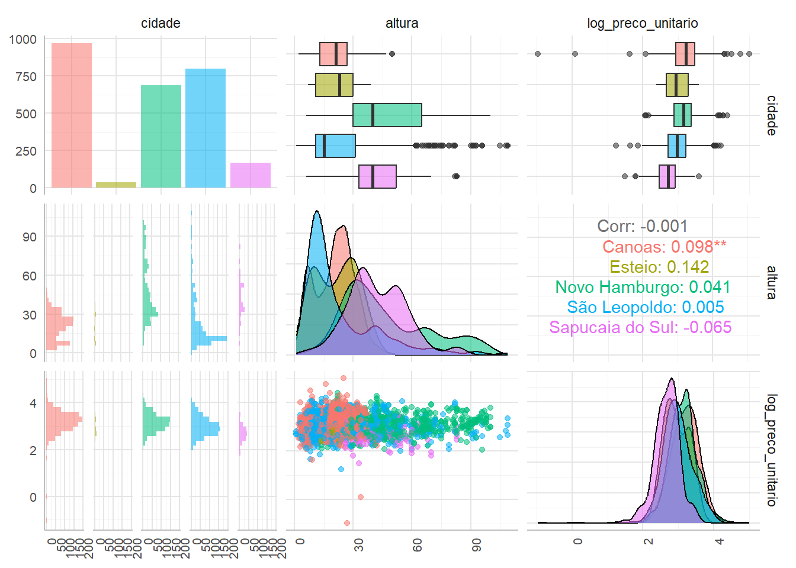

Impacto das enchentes no preço de aluguéis
Contextualização
Em Abril de 2024, o Rio Grande do Sul sofreu com fortes chuvas que resultaram em enchentes em diversas cidades do estado. Estas enchentes causaram danos materiais e prejuízos para a população, incluindo a perda de imóveis e a necessidade de realocação de moradores.
A questão de pesquisa
Este trabalho pretende analisar a influência da altura em relação ao nível do mar no preço de anúncios de locação pós-enchentes do RS/Brasil.
Mais especificamente, houve uma mudança significativa da influência dessa altura no preço de anúncios de locação após as enchentes?
Ideia
Como a percepção de valor é algo subjetivo, é possível que a altura em relação ao nível do mar tenha se tornado um fator mais relevante na decisão de alugar um imóvel após as enchentes.
Também podemos entender que imóveis em regiões mais baixas, potencialmente, foram atingidos e, consequentemente, perderam valor.
Para responder esta pergunta, foram coletados dados de anúncios de locação de imóveis em diferentes cidades do RS/Brasil, com informações sobre a altura em relação ao nível do mar e o preço unitário do aluguel.
Preço unitário
Esta é uma medida que simplifica a comparação entre imóveis de diferentes tamanhos.
É calculada através da razão entre o preço do aluguel e a área do imóvel, ou seja, é o preço do aluguel por metro quadrado.
Análise exploratória
Para iniciar a análise, vamos verifica os dados tabelados de 2023.
E de 2024.
Insights
- Estamos comparando o mesmo período de 2024 com 2023.
- A mediana do preço unitário dos aluguéis aumentou para todas as cidades, exceto Esteio.
- Em todas as cidades houve aumento da oferta de imóveis em regiões mais baixas, possívelmente de pessoas querendo sair de áreas de risco.
Distribuição Geográfica
Vamos visualizar a distribuição geográfica dos imóveis em 2024, para observar quais estão em áreas de risco.
Na imagem abaixo vemos o leito do Rio dos Sinos em até 20 metros de altura.
Insights
- Há uma boa distribuição em imóveis em áreas de risco e em áreas seguras.
- Canoas e São Leopoldo possuem maior proporção de imóveis em área de risco.
Análise gráfica
Vamos verificar a relação entre nossas variáveis de interesse.
Nota
- Como a distribuição de preços assemelha-se a uma distribuição qui-quadrado, vamos aplicar uma transformada com a função logaritmo.

Insights
- Em 2023, observamos uma relação nula entre a altura e o preço unitário dos aluguéis.
- Em 2024, essa relação parece ser mais forte, com uma tendência de aumento do preço unitário com a altura.
- A maioria dos anúncios está concentrada em imóveis a uma altura de até 50m.
- Em todas as cidades houve um aumento na correlação, exceto em Esteio e Sapucaia do Sul.
- Esteio e Sapucaia do Sul possuem menor número de observações, mas isso pode ser explicado pelo fato de serem, na região de estudo, as menores cidades.
- São Leopoldo e Canoas tiveram a maior taxa de imóveis atingidos.
Outliers
Notamos que existem três pontos que se destacam na relação \(\log(\text{preço unitário})\times\text{altura}\), dois em 2023 e um e 2024.
São anúncios com preço menor que \(2.5\ \text{R\$/m}^2\), como podemos ver a seguir.
Estes registros serão removidos.
Preço x Data
Vamos observar mais de perto a relação entre preço e data.
Insights
- O preço unitário dos aluguéis aumentou em 2024 em relação a 2023 (isso já era esperado devido à inflação).
- Houve um aumento na variabilidade dos preços em 2024. Notavelmente a partir de Julho, quando a situação começou a ser normalizada.
- Observa-se uma quantidade menor de anúncios criados entre Abril e Julho, quando a enchente atingiu seu ponto máximo.
Preço x Altura
Vamos olhar mais de perto essa relação.
Insights
- De maneira geral, a altura passou a apresentar uma potencial significância na definição dos preços dos anúncios.
Modelagem
Para avaliar a influência da altura no preço unitário dos aluguéis, vamos ajustar um modelo de regressão linear.
| dados_2023 | dados_2024 | |||||
| Predictors | Estimates | CI | p | Estimates | CI | p |
| (Intercept) | 3.17668 | 3.14619 – 3.20716 | <0.001 | 3.33217 | 3.29559 – 3.36875 | <0.001 |
| altura | 0.00089 | 0.00002 – 0.00176 | 0.045 | 0.00247 | 0.00167 – 0.00328 | <0.001 |
| cidade [Esteio] | -0.24376 | -0.37593 – -0.11160 | <0.001 | -0.42455 | -0.50955 – -0.33954 | <0.001 |
| cidade [Novo Hamburgo] | -0.08699 | -0.13160 – -0.04237 | <0.001 | -0.20888 | -0.25629 – -0.16146 | <0.001 |
| cidade [São Leopoldo] | -0.21267 | -0.24945 – -0.17590 | <0.001 | -0.30998 | -0.35267 – -0.26730 | <0.001 |
| cidade [Sapucaia do Sul] | -0.53464 | -0.60167 – -0.46761 | <0.001 | -0.49578 | -0.57334 – -0.41823 | <0.001 |
| Observations | 2655 | 2758 | ||||
| R2 / R2 adjusted | 0.109 / 0.108 | 0.106 / 0.104 | ||||
Modelos
Os modelos ajustados para 2023 e 2024 são:
- Para 2023:
\[ \begin{aligned} \text{Canoas:}\ & \log(\text{preço unitário}) = 0.001 \times \text{altura} + 3.18 \\ \text{Esteio:}\ & \log(\text{preço unitário}) = 0.001 \times \text{altura} + 2.93 \\ \text{Novo Hamburgo:}\ & \log(\text{preço unitário}) = 0.001 \times \text{altura} + 3.09 \\ \text{São Leopoldo:}\ & \log(\text{preço unitário}) = 0.001 \times \text{altura} + 2.96 \\ \text{Sapucaia do Sul:}\ & \log(\text{preço unitário}) = 0.001 \times \text{altura} + 2.64 \end{aligned} \]
- Para 2024:
\[ \begin{aligned} \text{Canoas:}\ & \log(\text{preço unitário}) = 0.003 \times \text{altura} + 3.33 \\ \text{Esteio:}\ & \log(\text{preço unitário}) = 0.003 \times \text{altura} + 2.91 \\ \text{Novo Hamburgo:}\ & \log(\text{preço unitário}) = 0.003 \times \text{altura} + 3.12 \\ \text{São Leopoldo:}\ & \log(\text{preço unitário}) = 0.003 \times \text{altura} + 3.02 \\ \text{Sapucaia do Sul:}\ & \log(\text{preço unitário}) = 0.003 \times \text{altura} + 2.84 \end{aligned} \]
Já podemos identificar algumas informações.
Insights
- O coeficiente de altura é mais significativo em 2024 do que em 2023.
- O coeficiente de cidade é significativo em ambos os anos.
- Todas as cidades tiveram aumento no preço unitário médio, exceto Esteio.
Resíduos
Insights
- De uma maneira geral, os resíduos estão bem distribuídos e não apresentam padrões.
- Os resíduos padronizados possuem um limite de \(2\).
Diferença significativa
Para validar que a diferença encontrada é significativamente diferente de zero, vamos realizar um teste de hipóteses.
Para isso usaremos dois testes, o teste T para a diferença entre médias e o teste de Clogg et al. (1995)[1] para a diferença entre os coeficientes.
O teste de Clogg et al. (1995) é um teste Z, onde a estatística de teste é dada por:
\[ \text{Z} = \frac{\hat{\beta}_1 - \hat{\beta}_2}{\sqrt{\text{SD}_{\hat{\beta}_1}^2 + \text{SD}_{\hat{\beta}_2}^2}} \]
Assim, os testes indicam que houve uma mudança significativa na influência da altura no preço unitário dos aluguéis.
Insights
- Ambos os testes indicam que houve uma mudança significativa na influência da altura no preço unitário dos aluguéis.
- O coeficiente de altura é mais significativo em 2024 do que em 2023.
Sugestões para trabalhos futuros
Ficam aqui algumas questões pertinentes para futuras investigações:
- Como a relação atual entre a altura e o preço se comporta se modelado por séries temporais?
- Em 1941 houveram, também enchentes, mas em 2023 a correlação entre altura e preço era insignificante. Por quanto tempo a relação atual se manterá? Quando começa a diminuir?
- Em cidades que não foram atingidas a altura passou a ser significante?
Curiosidade
O índice de preços FipeZap para aluguéis residenciais, deixou de funcionar depois das enchentes.
Valores usados
Foi usado o número do índice de preços de aluguéis residenciais de Porto Alegre para ajustar os preços de 2023 e 2024.
| dados_2023 | dados_2024 | |||||
| Predictors | Estimates | CI | p | Estimates | CI | p |
| (Intercept) | 2.105 | 1.618 – 2.592 | <0.001 | 3.238 | 2.971 – 3.504 | <0.001 |
| fipezap | 0.007 | 0.004 – 0.011 | <0.001 | -0.000 | -0.002 – 0.001 | 0.688 |
| Observations | 2655 | 2758 | ||||
| R2 / R2 adjusted | 0.006 / 0.005 | 0.000 / -0.000 | ||||
Insights
- Na segunda metade de 2023, o índice conseguia explicar em torno de \(0.5\%\) da variabilidade dos preços.
- Depois das enchentes, o índice deixou de explicar a variabilidade dos preços.
Referências
[1] Clogg, C. C., Petkova, E., & Haritou, A. (1995). Statistical methods for comparing regression coefficients between models. American Journal of Sociology, 100(5)